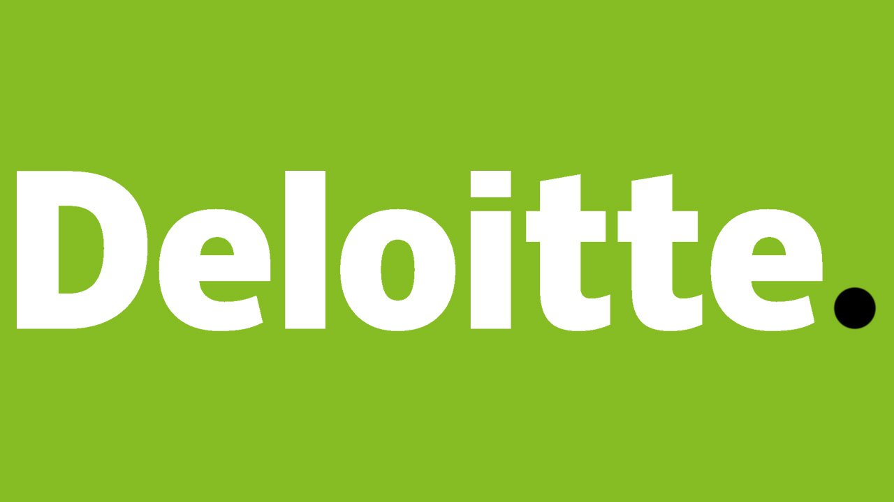

Intro
Currently, I am pursuing my bachelors in CS and learning new technologies to bring changes to society. I am passionate about my work. Because I love what I do, I have a steady source of motivation that drives me to do my
best.
I am ambitious and driven. I thrive on challenges and constantly set goals for myself, so I have something to strive
towards. I’m not comfortable with settling, and I’m always looking for an opportunity to do better and achieve
greatness.
I’m a people person. I love meeting new people and learning about their lives and their backgrounds. I can almost always
find common ground with strangers, and I like making people feel comfortable in my presence.
I am highly organized as well as an excellent communicator. I pride myself on making sure people have the right
information because it drives better results
Education
Vellore Institute of Technology, Vellore
Bachelors of Technology(B.Tech)
Computer Science and Engineering
Duration - Jul 2019 - Jul 2023
Current Grade - 9.33/10(CGPA)
MDS Public School, Udaipur
All India Senior School Certificate Examination(AISSCE)
Physics, Chemistry and Maths
Duration - Apr 2017 - Apr 2019
Grade - 90%
St. Teresa's Senior Secondary School, Udaipur
All India Secondary School Examination(AISSE)
Regular Courses
Duration - Apr 2015 - Mar 2017
Grade - 10/10(CGPA)
Work-Experience
PricewaterhouseCoopers(pwc)
Upcoming Technology Consulting Intern
Expected Duration - May 2022 - Jul 2022
Samsung(SRI-B)
Prism Research Intern
Expected Duration - Nov 2021 - Present
Working on Building a Summarization engine for emails and long SMS by Gathering data for various domains (Email, SMS , Tweets) then
Implementing the summarization in Android using statistical method and Validating the performance against the state of art frameworks by
providing Demo on the Mobile device.
KPMG US
Data Analytics Consulting Virtual Internship
Duration - May 2020
Targeting high-value customers based on customer demographics and attributes by applying Data Analytics, Customer Segmentation, and a Data-Driven Approach and
Using visualizations to present insights by making Data Dashboards and Data Visualisations for a better perspective.

JPMorgan Chase & Co.(JPMC)
Software Engineer Virtual Experience
Duration - Apr 2020 - May 2022
Interfacing with a stock price data feed and set up your system for analysis of the data by Implementing the Perspective open source code in preparation
for data visualization with Perspective to create the chart for the trader’s dashboard and Make a contribution to Perspective or other project backlogs.
Data Visualization with perspective, Frontend development and Establishing financial Data Feeds.

Deloitte
Tech Consulting Virtual Internship
Duration - Apr 2020 - Jun 2020
Focused on Technology Strategy & Innovation and Optimisation & Delivery with an overview of Cloud Computing.
Providing Feasibility Assessment, Value Analysis, Project Delivery, Planning Cost Estimation on an online bankingplatform.
Conduct an initial market scan to evaluate the financial accounting system and to understand what potential solutions
are available to meet Sector Metric's requirements by Prioritisation of criteria, Cost Analysis, and Implementation Planning
Projects
E Commerce Search System
Recommendation System based on Image Retrieval
Using Autoencoders as well as VGG-16 ImageNet for CBIR and using Euclidean and categorical similarity measure
Smart Basket Grocery System
Recommendation System based on Image Retrieval
Using Autoencoders as well as VGG-16 ImageNet for CBIR and using Euclidean and categorical similarity measure
Detection of pneumonia in Lungs
Predicted and identified pneumonia with 97.24% accuracy on YOLO v4 mode
Political bias in social media
Calculating a Most political bias platform using centrality and identifying different communities by applying Girvan Newmans
REXMART
Online Webstore for Velvet and Rexine
A B2C website with an interactive client friendly online website for a neighborhood store.
Technical Skills
Contact
Drop a Message on my Socials